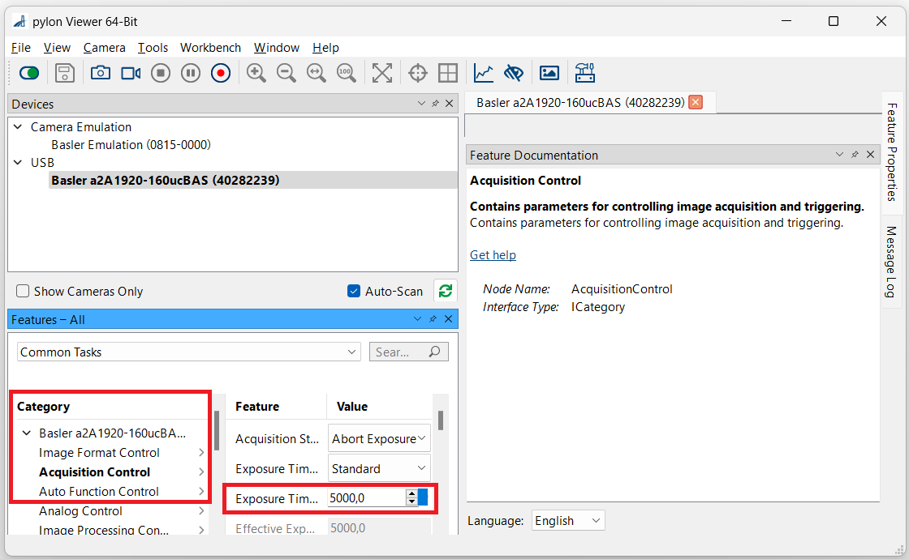

Basler Camera Sensors
The LEnsE team developed Python elements for implementing industrial cameras from Basler.
Requirements
A Basler camera
It goes without saying that you must own a Basler camera.
All the source codes of the wrapper were tested with a a2A 1920-160ucBAS camera.
Pylon Viewer software and drivers
Industrial camera sensors from the Basler family require the installation of the Basler drivers, including in their pylon Viewer software. More information on the Basler website.

From Basler Website.
Pypylon wrapper
An official python wrapper for the Basler pylon Camera Software Suite is called pypylon. You can get more information about pypylon on their GitHub repository : Pypylon GitHub repository.
{kind=link}
From Pypylon Website.
You can install this extension in a shell by the command : pip install pypylon
Warning
A complete version of Python (higher than 3.9) must be already installed on your computer. To check the version number, you can use the next command in a shell : python --version
Installation test
Before any software development, you need to test if the hardware is operational and if the driver of the USB camera is correctly installed.
Warning
Be sure that your camera is connected to an USB port of your computer.
Pylon Software from Basler
First of all, you should try to obtain images from the software provided by Basler.
Open the pylon Viewer software

When the main window of the software is opened, you can see your device in the USB sub-section of the Devices area (in the upper left corner) :

Double-click on the device you want to test.
You have now control your device. Especially, in the lower left corner, you have access to different features of the camera :
 Start video by clicking on the Continuous Shot of the toolbar :
Pypylon extension
The pypylon_main_test.py file from the progs/Basler/examples/ directory of the repository is an example to check that the pypylon extension is correctly installed and that the pylon driver is recognized by the Python API.
You can also download this example here.
This file is provided by the development team of the pypylon wrapper.
EXAMPLE ???
If the execution of this script proceeds without error, it means that everything is ready to use the Basler devices in a Python script or interface.
LEnsE development
To facilitate the integration of the pypylon API in the different projects, we developped :
a driver based on the pypylon API,
a widget based on PyQt6.
Basler Driver
This driver is based on the Pypylon Wrapper.
It is composed in two main files :
>>> my_cam = CameraBasler(cam_dev)
Basler Widget
API reference
CameraBasler class
- class camera_basler.CameraBasler(cam_dev: pypylon.pylon.TlFactory)
Class to communicate with a Basler camera sensor.
- Parameters:
camera_device (pylon.TlFactory.device) – Device object from the pypylon wraper.
camera (pylon.TlFactory.InstantCamera) – Camera object that can be controlled.
TO COMPLETE
Note
In the context of this driver, the following color modes are available :
‘Mono8’ : monochromatic mode in 8 bits raw data
‘Mono10’ : monochromatic mode in 10 bits raw data
‘Mono12’ : monochromatic mode in 12 bits raw data
- __init__(cam_dev: pypylon.pylon.TlFactory) None
Initialize the object.
- disconnect()
Disconnect the camera.
- get_aoi() tuple[int, int, int, int]
Return the area of interest (aoi).
- Returns:
[x0, y0, width, height] x0 and y0 are the coordinates of the top-left corner and width and height are the size of the aoi.
- Return type:
tuple[int, int, int, int]
- get_black_level()
Return the blacklevel.
- Returns:
the black level of the device.
- Return type:
int
- get_black_level_range() tuple[int, int]
Return the range of the black level.
- Returns:
the minimum and the maximum value of the frame rate in frames per second.
- Return type:
tuple[int, int]
- get_cam_info() tuple[str, str]
Return the serial number and the name.
- Returns:
the serial number and the name of the camera
- Return type:
tuple[str, str]
- get_color_mode()
Get the color mode.
- Parameters:
colormode (str, default 'Mono8') – Color mode to use for the device
- get_exposure() float
Return the exposure time in microseconds.
- Returns:
the exposure time in microseconds.
- Return type:
float
- get_exposure_range() tuple[float, float]
Return the range of the exposure time in microseconds.
- Returns:
the minimum and the maximum value of the exposure time in microseconds.
- Return type:
tuple[float, float]
- get_frame_rate() float
Return the frame rate.
- Returns:
the frame rate.
- Return type:
float
- get_frame_rate_range()
Return the range of the frame rate in frames per second.
- Returns:
the minimum and the maximum value of the frame rate in frames per second.
- Return type:
tuple[float, float]
- get_images(nb_images: int = 1) list
Get a series of images.
- Parameters:
nb_images (int, default 1) – Number of images to collect
- Returns:
List of images
- Return type:
list
- get_sensor_size() tuple[int, int]
Return the width and the height of the sensor.
- Returns:
the width and the height of the sensor in pixels
- Return type:
tuple[int, int]
- is_camera_connected() bool
Return the status of the device.
- Returns:
true if the device could be opened, and then close the device
- Return type:
bool (or error)
- reset_aoi() None
Reset the area of interest (aoi).
Reset to the limit of the camera.
- set_aoi(x0, y0, w, h) bool
Set the area of interest (aoi).
- Parameters:
x0 (int) – coordinate on X-axis of the top-left corner of the aoi
y0 (int) – coordinate on X-axis of the top-left corner of the aoi
w (int) – width of the aoi
h (int) – height of the aoi
- Returns:
True if the aoi is modified
- Return type:
bool
- set_black_level(black_level) bool
Set the blackLevel.
- Parameters:
black_level (int) – blackLevel.
- Returns:
True if the black level is lower than the maximum.
- Return type:
bool
- set_color_mode(colormode: str) None
Change the color mode.
- Parameters:
colormode (str, default 'Mono8') – Color mode to use for the device
- set_display_mode(colormode: str = 'Mono8') None
Change the color mode of the converter.
- Parameters:
colormode (str, default 'Mono8') – Color mode to use for the device
- set_exposure(exposure: float) None
Set the exposure time in microseconds.
- Parameters:
exposure (float) – hexposure time in microseconds.
- set_frame_rate(fps)
Set the frame rate in frames per second.
- Parameters:
fps – frame rate in frames per second.
CameraList class
- class camera_list.CameraList
Class to list Basler camera (all camera in a future evoluation)
- Parameters:
available_cameras (list[tuple[int, str, str]]) – List of the devices connected to the computer [id, device]
camera_list_str – List to print of the devices connected to the computer [id, serial number, device name]
nb_cam (int) – Number of connected cameras
Example
In this example, you create a
CameraListobject, then get the number of Basler cameras connected to your computer (in this case 1 camera is connected) and finally obtain the complete list of the available cameras (in this case a a2A1920-160ucBAS camera with the serial number 40282239).>>> from camera_list import CameraList >>> cam_list = CameraList() >>> cam_list.get_nb_of_cam() '1' >>> cameras_list = cam_list.get_cam_list() >>> print(cameras_list) '[[0, 40282239, 'a2A1920-160ucBAS']]'
- get_cam_device(idx: int) pypylon.pylon.TlFactory
Return the list containing the ID and a device pypylon object
- Returns:
Device corresponding to the index in the list of available cameras
- Return type:
pylon.TlFactory.Device
- get_cam_list() list[tuple[int, str, str]]
Return the list containing the ID, serial number and name of all cameras connected
- Returns:
list with ID, Serial Number and Name of each camera connected on the computer [[cam1_id, cam1_ser_no, cam1_name], … ]
- Return type:
list
- get_nb_of_cam() int
Return the number of connected cameras
- Returns:
Number of Basler connected cameras
- Return type:
int
- refresh_list() None
Refresh the list of the connected devices.